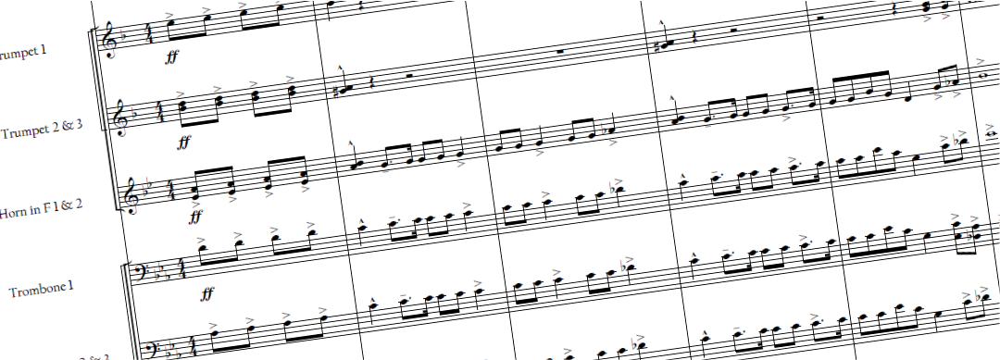

About
Dakota Pederson (b. 1999) is an Indiana composer who discovered his passion for music composition at an early age. Pederson's success flourished from an early age, winning the first annual MakeMusic Young Composers competition at age 16. From then on, Pederson would additionally win the Claude T. Smith Composition Contest, and the Association of Concert Bands Composition Contest twice. Though Pederson has had numerous successes in composition, Pederson has never been formally trained in composition. As a self taught composer, Pederson has developed a composititon style that focuses on a highly charged rhythm.
Pederson graduated from Indiana State University with a Bachelors of Music Education, Summa Cum Laude. He currently teaches band in northern Indiana. In addition to music composition, Pederson enjoys playing Tennis.